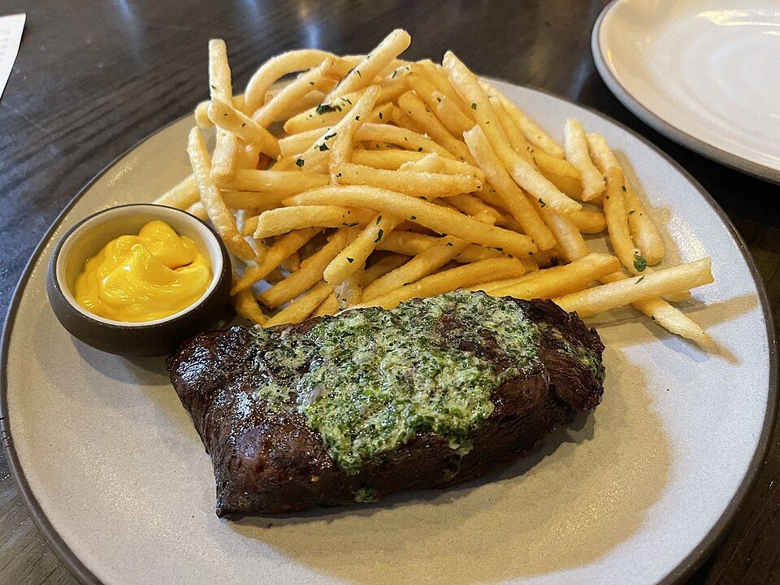
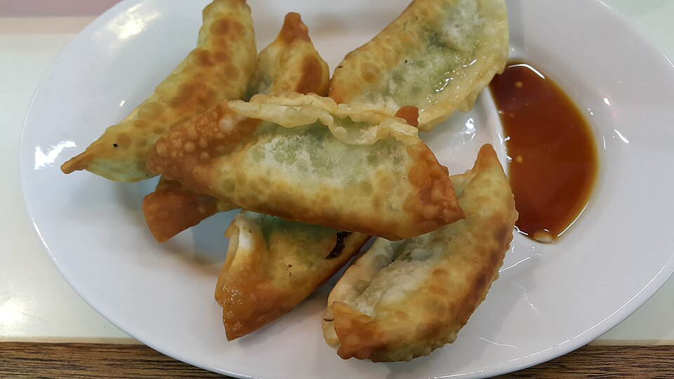

BARRA / FUEGO / NOCHE
CONCEPTO 005 · DEV CORPCOCINA SIN FORMALIDADES.SIGUE BAJANDO ↓
[01]
NO ES SOLO
SALIR A CENAR.
ES CAMBIAR
DE RITMO.
Deja el día en la puerta. Aquí mandan los platos al centro, los sabores intensos y las conversaciones que se alargan.
Una barra para empezar.
Una mesa para quedarse.
El resto, sobre la marcha.
AL PUNTO.
SIN RODEOS.

02 / BARRAUNO MÁS.
Y YA.
[03] / HAZLE UN HUECO A LA NOCHE
GUARDAMOS
TU SITIO.
Elige tu momento.
Trae a tu gente.